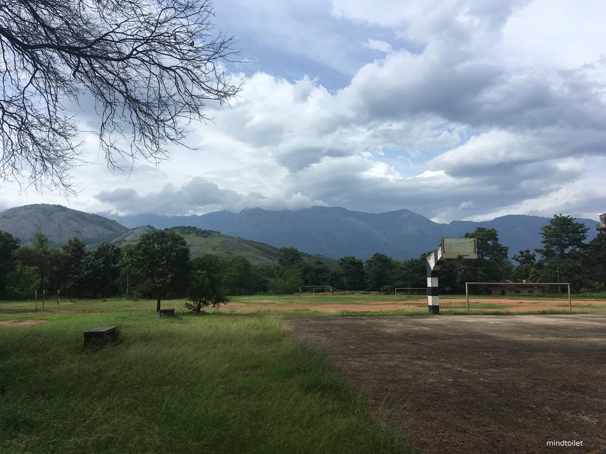

Make us dream!
Liverpool FC is my football club. Palakkad is my beautiful home town in Kerala, India.
I have a dream…
Liverpool FC came to Palakkad to play a football game. Sadio Mane started on the bench, but he chose to stand with the fans. As he was watching the game, a confident young man stood next to him. Naturally, they became friends. Unforeseen, as is usually the case with nature, the game was cancelled few minutes into it. I asked Sadio, “Will you play football with us in my school?“ He said yes. So I took him to Navodaya Vidyalaya, Palakkad, the best school in the world. I introduced Sadio to my friends and they all were ready for a game.

Sadio fell in love with the ground the moment he saw it. Western
ghats in the backdrop and the amazing Palakkadan wind made him whisper:
“This is where I should be playing”. Sadio played in my team's attack and I
played in the midfield. When my goalkeeper played a simple ball to me, I
looked up the field and saw Sadio making the run. With my barefoot, I
sliced the ball and it was airborne. Seconds later, that touch by
Sadio, and the finish, the ball was in the back of the net. The trend
continued, he made those runs, and I sent him through on the goal.
We won!
After the post match handshake and hug, Sadio asked me: “Why don’t you
come to Melwood some day?” in French obviously. I smiled, and said
“Oui, I will try. Merci beaucoup”. Sadio flew back to England.
In the plane, he spoke to a man called Jurgen Klopp. Mr. Klopp spoke to
someone and a week later, I got a call from Liverpool FC, the best
football club in the world.
I landed in John Lennon airport. Imagine all the people, waiting for me.
I reached Melwood, Liverpool FC's training ground.
Sadio introduced me to his friends. Virgil was taller than me.
Trent is younger than me. Robbo warned me about Millie's humour sense.
Mo's English was better than mine. I gave Ali a
chocolate and he kept it. I told Bobby he is my favourite player. The
boss gave me hug and said welcome. I was home.
I wore my boots for evening's training session. Sadio told the boss that he wanted me to play in his side. I scored one, assisted twice, made a goal saving tackle and broke my ankle.
Hendo lifted the ball onto Mo's path, who cut it back to Bobby, who did a nonchalant flick into the empty space behind Virgil. I was too quick for the big man. Blink of an eye, I slotted the ball past Adrian and did a Bobby celebration. Then Allison played a simple ball to me, I looked up the field and saw Sadio making the run. I sliced the ball and it was airborne. Seconds later, that touch by Sadio and the finish, the ball was in the back of the net. The second assist followed a neat link up play between Bobby, Mo, Sadio and Me. Bobby's no look finish met my cross at the far post. Jurgen's celebration to that was wild.
I might have kicked the wall too hard. That's how I woke up with a
broken ankle, but it was definitely worth the dream.
YNWA!
Comments
Comments powered by Disqus